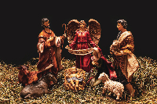
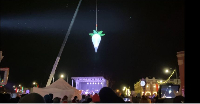
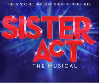

About Rupert
The City of Rupert is the county seat of Minidoka County and its largest city.
Rupert is strategically located 45 miles from Twin Falls, Idaho, 160 miles from Boise, Idaho and 180 miles from Salt Lake City, Utah. The City is easily accessible to Interstate 84 which is only 4.5 miles from the city center; the interstate road system is accessed via State Highway 24 and State Highway 25. These two highways provide two separate access points to I-84. All of the City’s commercial and industrial areas are therefore easily accessed by this well-established road system.
The center of Rupert’s Historic Business District is listed on the National Register of Historic places and surrounds a beautiful town square, also on the historic register. The Historic Rupert Square is an active place featuring many business and community events throughout the year.
Local Events
A Musical Christmas
A non-denominational tribute to Jesus Christ, Handel’s “Messiah” singalong directed by Craig Jessop — best known for his tenure directing the Tabernacle Choir at Temple Square — will be held at 7:30 p.m. Dec. 17 at the Wilson Theatre.
New Years Beet Drop
Come to the Rupert Town Square on December 31, 2021 for this year's Beet Drop!. This year Royal Bliss will ringing 2022 downtown at the Rupert Square. This is a free show and all ages are welcome.
Sister Act The Musical
The Historic Wilson Theatre proudly presents Sister Act The Musical. Based off the 1992 movie “Sister Act” come and be transported into the 70’s. Sister Act will make you laugh, cry and you will want to dance the night away .
Historical Fact
Rupert became a village in 1904. It was originally called Wellfirst because it had the only well within miles and people traveled long distances to get their supply of water from the well, which was located in the middle of the Historic Rupert Square Park. An employee of the railroad brought mail to the settlers in 1904, whose name was John Henry Rupert. The railroad put the name Rupert on his mailbag and soon the town was named Rupert. The first post office was established in July of 1905 and W.N. Schilling was the first Postmaster, who also opened the Rupert Mercantile Companying May of 1905 on the west side of the square. Rupert was platted by engineers of the Reclamation Service. The Village of Rupert was incorporated on April 12, 1906. M.M. Mackay was Rupert's first Mayor.
Welcome to Christmas City, USA
It’s common to see communities all around Idaho celebrating the holidays in their own special way. However, there’s only one town in the Gem State that’s actually earned the nickname of “Christmas City, USA!” Rupert is a quaint town in Minidoka County that seems pretty quiet, but it takes on an entirely new character as the holidays roll around. Not only does it get all dressed up in lights, but community events and attractions are abundant during this time of year.